白天，太阳会产生一个与你的身高和其他物体高度比例相同的影子。
假设，我们要判断一棵树有多高，只需测量你的影子的长度，然后标记并测量一个高大物体相应影子的长度。
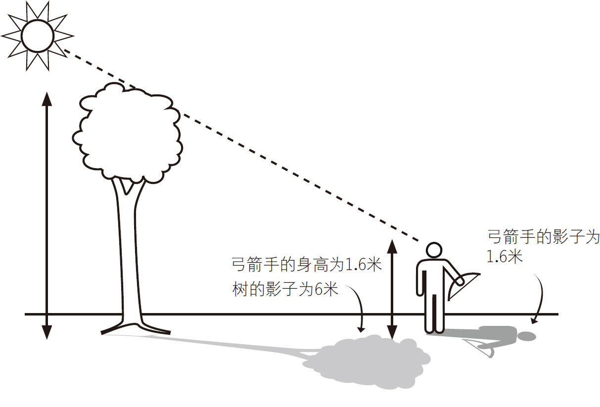
图3-33
三角阴影/高度测定
当你的影子长度等于你的身高时，测量一个高物体的影子长度，我们就能知道这个物体的高度了。
如果你不想等到影子长度等于你的身高的时候，你可以用一个简单的比例公式来计算高物体的高度。
例如，如果你的影子长度是1.8米，你的高度实际上是1.6米，测量树的阴影长度，并使用以下公式：
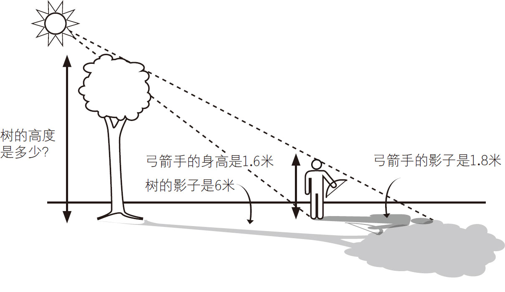
图3-34
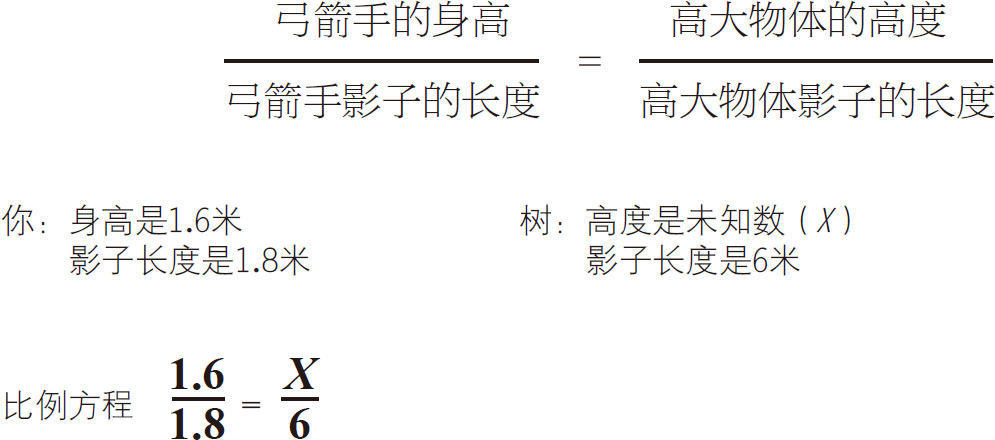
这棵树的高度是5.3米。
勾股定理可以让你在知道物体间的距离和三角形的至少一个边的边长和一个角的角度的前提下，算出物体的高度。
你可以用日常物品制作一个测高计，计算较高物体的高度。
需要准备的东西：
►量角器
►垫圈
►金属丝
►透明胶带
►剪刀
►吸管
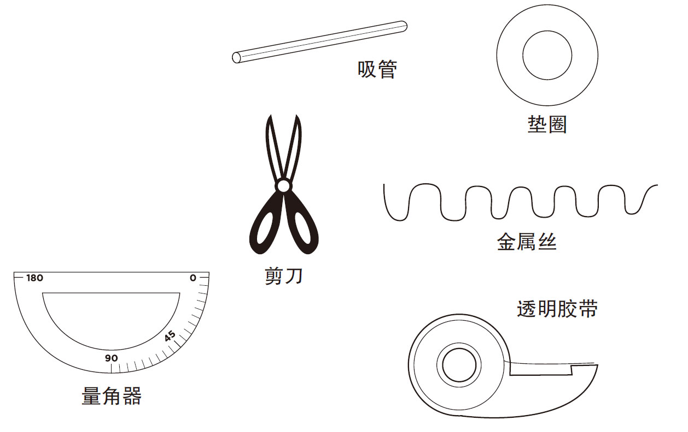
制作
将金属丝通过垫圈和透明胶带穿到量角器的直边的中间，见图3-35。
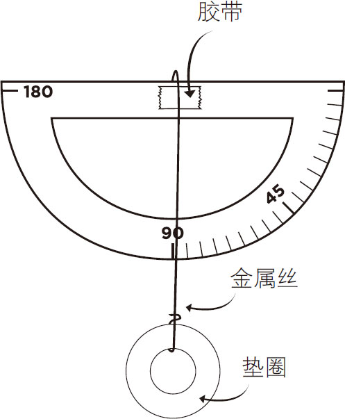
图3-35
接下来，剪7厘米长的吸管沿量角器直边右侧粘住，见图3-36。
垫圈能够自由摆动。
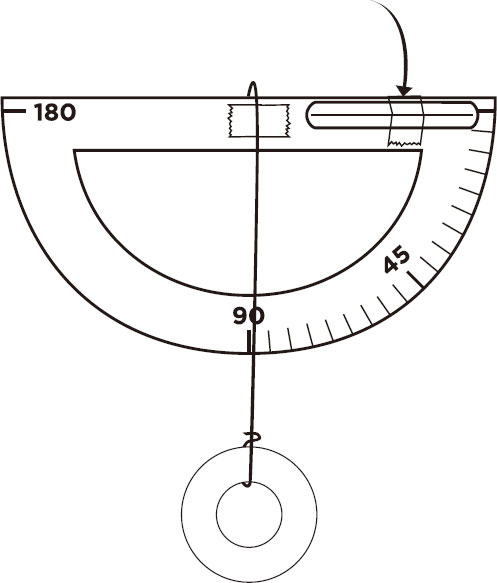
图3-36
当你知道一个直角三角形的一条边的长度和一个角的角度时，你就可以计算出未知边的长度。图3-37显示的是一个60度的正切角三角形。使用三角函数或科学计算器算出切线数是1.7 321。男孩的身高是1.7米，他与旗杆的距离也就是三角形的另一边长度是3.4米。使用这些数字可以计算出旗杆的高度。[此书分享V信wsyy 5437]
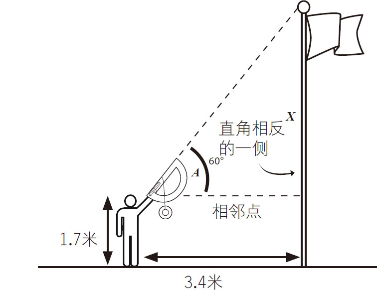
图3-37
计算如下：
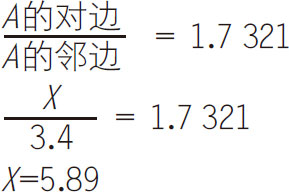
加上人的身高1.7米，
总高度即旗杆高度为7.59米。
注意：每个角度都有自己唯一的切线数，具体图表在本书的参考资料部分。
面向你所需要测量的物体，用你的身高做参考，使用侧高计估算物体的高度。（人的眼睛通常在头顶下方5至8厘米处，记住这一点，估算测高计与地面的距离。）
下一步，来回调整你与物体之间的距离，以获得良好的视野高度。
通过测高计的吸管仰望高大的物体时，注意量角器上的角度，通过这个尺度来计算物体的高度。
■三角原理
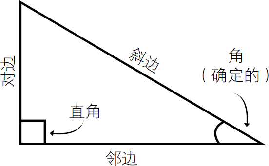
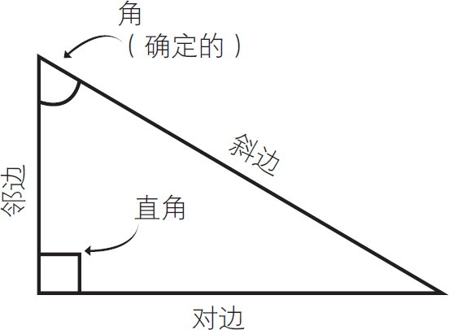
■确定未知边的三角公式
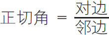
（已知相对边与相邻边的长度时）
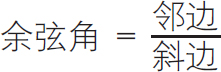
（已知相对边和斜边的长度时）
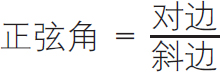
（已知相对边和斜边的长度时）
记住下面的字母：
用S O H C A H T O A
记住：
正弦（S） 对边（O）／斜边（H）
余弦（C） 邻边（A）／斜边（H）
正切（T） 对边（O）／邻边（A）
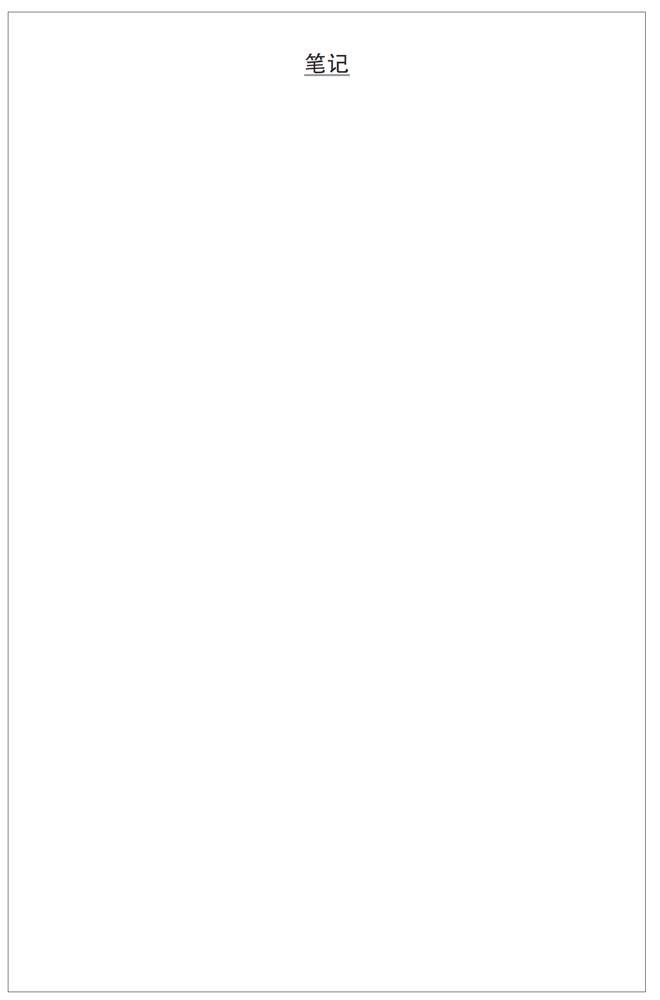